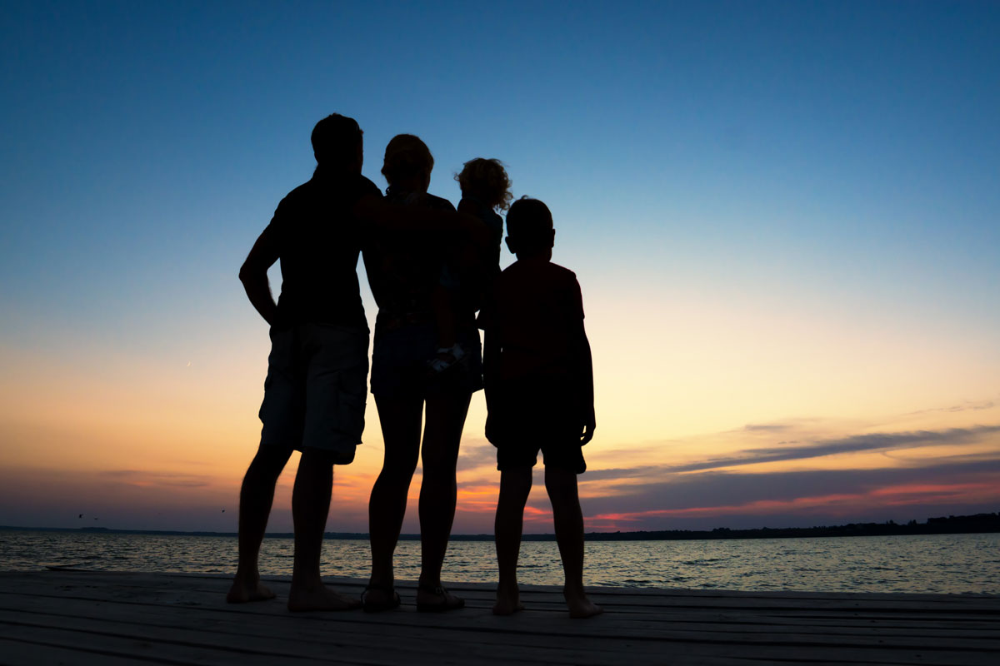
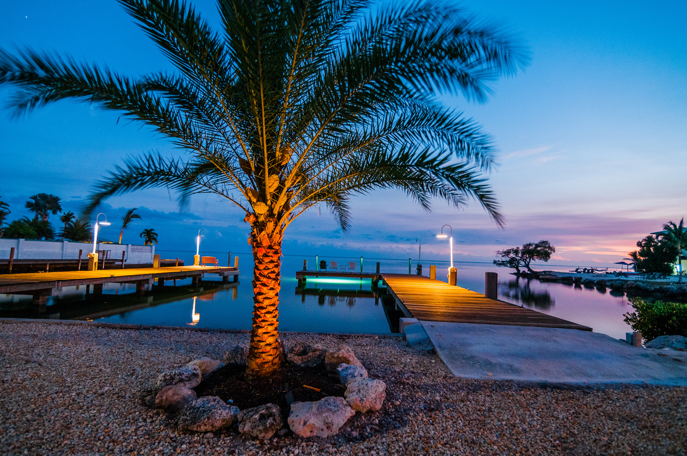

1
Fish early
Start the water day in the morning while conditions and family energy are strongest.
This article gives a practical family weekend plan for Marathon, Florida Keys, from the perspective of Seascape Resort & Marina. It helps travelers organize days, activities, and downtime around a waterfront resort stay. Use it when you want an easy first-trip structure.
Less chaos. More water. More together time. Use this simple Seascape-based itinerary to turn a weekend in Marathon into a calm, memorable family trip with dock sunsets, pool breaks, boating access, and easy island rhythm.
Why this works
Families do better when the trip feels easy. Marathon helps because it keeps the experience close. Less driving. Less friction. Less energy wasted moving from place to place.
Seascape makes that even stronger. You wake up already near the water. You can shift from room to pool to dock without planning your whole day around logistics. That keeps kids happier and gives adults more space to actually relax.
Florida Keys mood

Marina + family time
Even if your family is not bringing a boat, the marina adds real value to the stay. Kids love looking into the water. Parents love sunset dock time. Night lighting turns into its own little event.
Cook your catch
If your family fishes, turn it into a full trip memory. Catch earlier in the day, keep everything on ice, then bring it in for dinner. It feels fun, earned, and much more memorable than a standard meal stop.
Start the water day in the morning while conditions and family energy are strongest.
Use dockside ice so your catch stays in good shape until dinner.
Confirm the restaurant is offering cook-your-catch that evening before you head in.
Check whether they want it cleaned, filleted, or brought in whole.
The weekend plan
This is built to feel realistic. Not overloaded. Not exhausting. Enough structure to make the trip easy, with enough flexibility to keep the Florida Keys feeling relaxed.
Visual trip moments
These are temporary placeholders for now, but the page is already styled to support a more premium visual direction with stronger Florida Keys personality.



Book direct
Call for the best rates and direct guidance on rooms, dates, and marina questions. This is the easiest way to match your stay to the type of family trip you actually want.